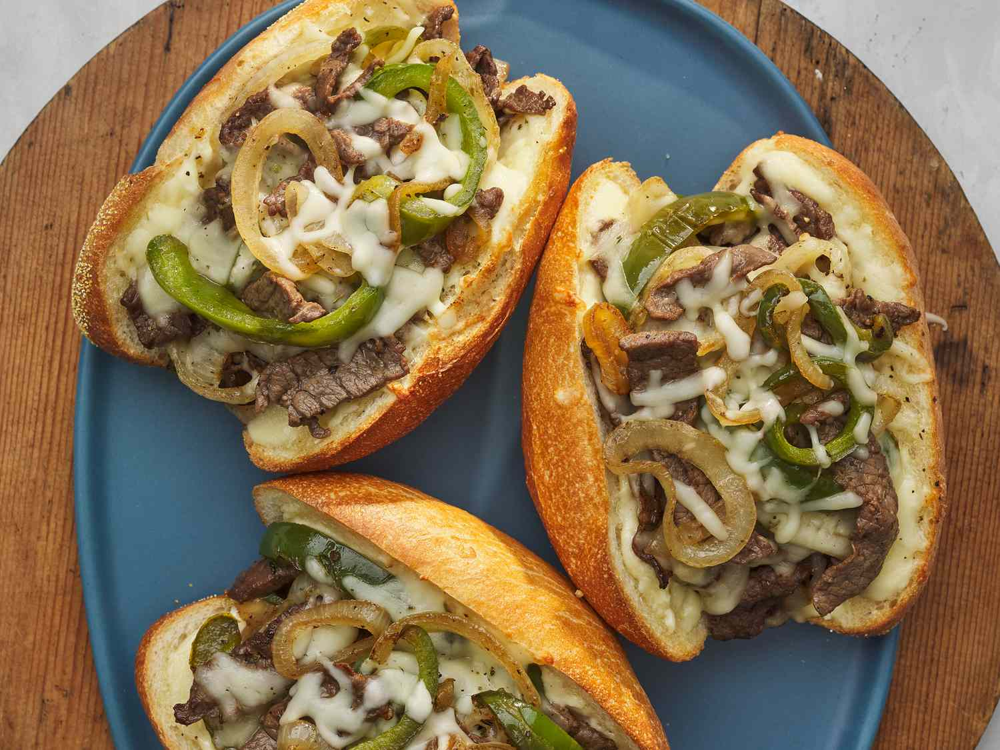

Philiy Cheesesteak Sandwich

Description
This is a delicious Philly cheesesteak with mozzarella, peppers,
and onion that gets rave reviews from my husband and brother.
The garlic mayo is both easy and flavorful.
Ingredients
1 pound beef round steak, cut into thin strips
2 green bell peppers, cut into 1/4 inch strips
2 onions, sliced into rings
4 hoagie rolls, split lengthwise and toasted
1 (8 ounce) package shredded mozzarella cheese
Directions
Gather all ingredients
Combine mayonnaise and minced garlic in a small bowl.
Cover and refrigerate. Preheat the oven to 500 degrees F (260 degrees C).
Heat oil in a large skillet over medium heat. Sauté beef until lightly browned.
Stir in bell peppers and onions and season with salt and pepper.
Sauté until vegetables are tender, then remove from heat.
Spread each bun generously with garlic mayonnaise.
Divide beef mixture into buns. Top with shredded cheese and sprinkle with oregano.
Place sandwiches on a baking pan
Heat sandwiches in the preheated oven until cheese is melted or slightly browned.
Home